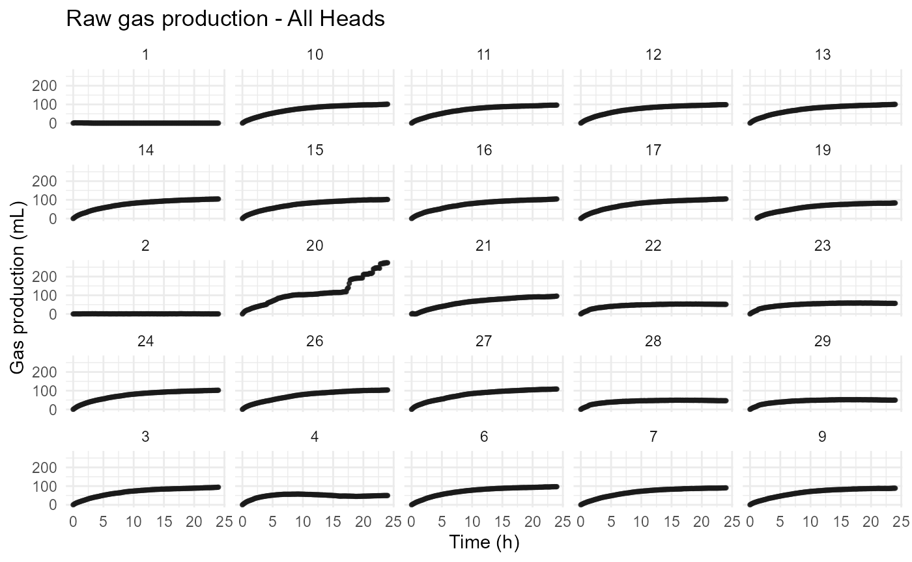
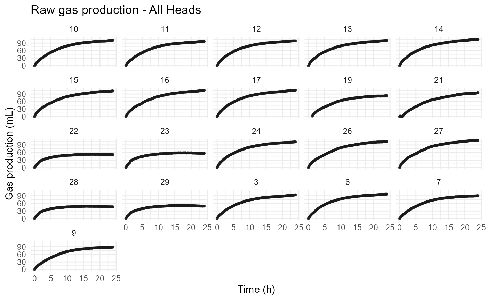
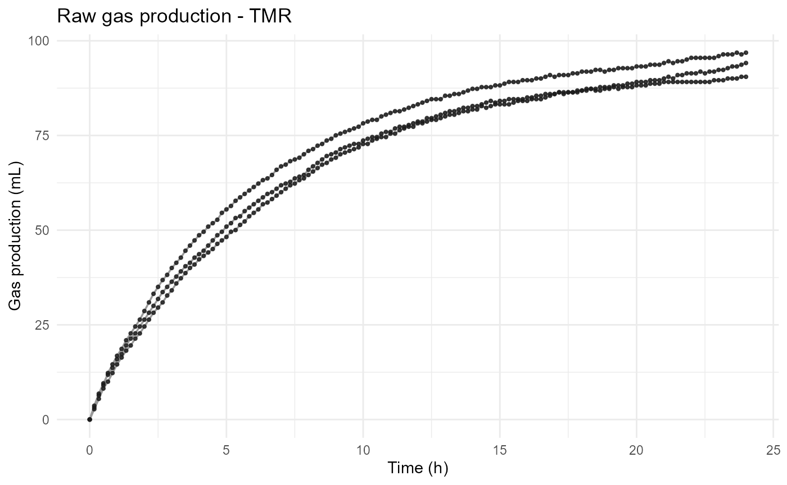
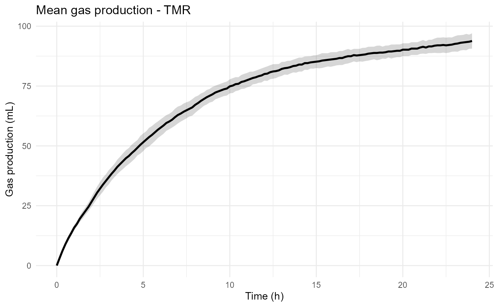

Introduction
rumenGP provides a complete workflow for analyzing in vitro rumen gas production experiments.
The package supports:
- ANKOM RF datasets
- Manual gas-volume datasets
- Pressure-based datasets
- Fifteen built-in kinetic models
- User-defined kinetic models
- Model comparison and ranking
- Treatment-level model evaluation
- Diagnostic and visualization tools
This vignette demonstrates a complete workflow using the packaged ANKOM example dataset.
Import ANKOM Data
Import the ANKOM RF output file and metadata table.
raw_data <- read_ankom(
files$ankom
)
metadata <- read_metadata(
files$metadata
)Validate Metadata
Before processing data, validate the metadata table.
metadata <- validate_metadata(
metadata
)
#> Metadata validation passed.
#> Heads: 25
#> Treatment: 5Process ANKOM Data
Convert pressure measurements into cumulative gas production.
gp <- process_ankom(
raw_data,
metadata,
headspace_ml = 210,
temperature_c = 39,
zero_negative_pressure = TRUE
)Optional blank correction:
gp_blank_corrected <- process_ankom(
raw_data,
metadata,
headspace_ml = 210,
temperature_c = 39,
zero_negative_pressure = TRUE,
blank_correction = "subtract_mean"
)When blank correction is enabled, the mean gas production of bottles
identified as Treatment = "Blank" is subtracted from all
nonblank bottles at each observation time.
Validate Processed Data
The resulting datasets are standardized rumen_gp
objects.
gp <- validate_ankom(
gp
)
#> rumenGP data validation passed.
#> Observations: 3618
#> Heads: 25
#> Treatments: 5
gp_blank_corrected <- validate_ankom(
gp_blank_corrected
)
#> rumenGP data validation passed.
#> Observations: 3618
#> Heads: 25
#> Treatments: 5
class(gp)
#> [1] "rumen_gp" "tbl_df" "tbl" "data.frame"Inspect the data:
head(gp)
#> # A tibble: 6 × 10
#> time_raw Time_h Head Gas_PSI Gas_kPa Gas_moles Gas_mL Bottle Rep Treatment
#> <chr> <dbl> <chr> <dbl> <dbl> <dbl> <dbl> <dbl> <dbl> <chr>
#> 1 10:54:01 0 1 0 0 0 0 1 1 TMR
#> 2 10:54:01 0 2 0 0 0 0 2 1 Blank
#> 3 10:54:01 0 3 0 0 0 0 3 2 TMR
#> 4 10:54:01 0 4 0 0 0 0 4 3 TMR
#> 5 10:54:01 0 6 0 0 0 0 6 4 TMR
#> 6 10:54:01 0 7 0 0 0 0 7 5 TMRVisualize Raw Gas Production
Individual bottle profiles can be visualized.
plot_gp(
gp
)
Remove Abnormal heads
gp_clean <- exclude_heads(
gp,
heads = c("1", "2", "4", "20"),
reason = "Sensor malfunction"
)
plot_gp(
gp_clean
)
Treatment-level observations can also be visualized.
plot_gp(
gp_clean,
treatment = "TMR"
)
Mean treatment profiles can be displayed using:
plot_gp(
gp_clean,
treatment = "TMR",
mean_treatment = TRUE
)
Note on Blank Correction
Blank correction is optional because laboratories often follow different preprocessing procedures.
By default, rumenGP retains the original gas-production values. When
blank_correction = "subtract_mean" is used, the mean gas
production of blank bottles is subtracted from all nonblank bottles
prior to model fitting and comparison.
Fit Kinetic Models
Several built-in models are available.
groot_fit <- fit_groot(gp_clean)
#> rumenGP data validation passed.
#> Observations: 3038
#> Heads: 21
#> Treatments: 5
mm_fit <- fit_mm(gp_clean)
#> rumenGP data validation passed.
#> Observations: 3038
#> Heads: 21
#> Treatments: 5
gompertz_fit <- fit_gompertz(gp_clean)
#> rumenGP data validation passed.
#> Observations: 3038
#> Heads: 21
#> Treatments: 5
brody_fit <- fit_brody(gp_clean)
#> rumenGP data validation passed.
#> Observations: 3038
#> Heads: 21
#> Treatments: 5
burr_fit <- fit_burr_xii(gp_clean)
#> rumenGP data validation passed.
#> Observations: 3038
#> Heads: 21
#> Treatments: 5
inverse_paralogistic_fit <- fit_inverse_paralogistic(gp_clean)
#> rumenGP data validation passed.
#> Observations: 3038
#> Heads: 21
#> Treatments: 5Summarize Model Fits
Each model provides parameter estimates and diagnostic statistics.
summary(groot_fit)
#>
#> Groot model summary
#> -------------------
#> Total bottles: 21
#> Successful fits: 21
#> Failed fits: 0
#> Low R-squared (< 0.90): 0Identify Potentially Problematic Bottles
flags <- flag_model(
groot_fit
)
head(flags)
#> Head Bottle Rep Treatment Converged Status RSS R2 RMSE
#> 1 10 10 2 Low TRUE OK 150.63376 0.9983872 1.0227745
#> 2 11 11 3 Low TRUE OK 181.51413 0.9978351 1.1227265
#> 3 12 12 4 Low TRUE OK 81.41463 0.9990175 0.7519171
#> 4 13 13 1 Medium TRUE OK 84.42650 0.9989933 0.7656991
#> 5 14 14 2 Medium TRUE OK 60.68699 0.9993438 0.6491821
#> 6 15 15 3 Medium TRUE OK 153.90377 0.9982583 1.0338163
#> AIC BIC Lambda_Boundary Flag_FitFailed Flag_LowR2
#> 1 423.1398 435.0190 FALSE FALSE FALSE
#> 2 449.9932 461.8725 FALSE FALSE FALSE
#> 3 334.5371 346.4164 FALSE FALSE FALSE
#> 4 339.7681 351.6473 FALSE FALSE FALSE
#> 5 292.2262 304.1055 FALSE FALSE FALSE
#> 6 426.2323 438.1116 FALSE FALSE FALSE
#> Flag_LambdaBoundary Overall_Flag
#> 1 FALSE OK
#> 2 FALSE OK
#> 3 FALSE OK
#> 4 FALSE OK
#> 5 FALSE OK
#> 6 FALSE OKPlot Residuals
Residual plots help identify systematic deviations.
plot_residuals(
groot_fit,
head = "6"
)Compare Models
Compare model performance using multiple metrics.
comparison <- compare_models(
Groot = groot_fit,
MichaelisMenten = mm_fit,
BurrXII = burr_fit,
InverseParalogistic = inverse_paralogistic_fit,
Gompertz = gompertz_fit,
Brody = brody_fit
)
comparison
#> Model Bottles Successful_Fits Failed_Fits Mean_R2 Mean_RMSE
#> 1 Groot 21 21 0 0.9967371 0.9955345
#> 2 MichaelisMenten 21 21 0 0.8804937 2.4761155
#> 3 BurrXII 21 21 0 0.9966061 1.1008029
#> 4 InverseParalogistic 21 21 0 0.9565272 3.2532678
#> 5 Gompertz 21 21 0 0.9722322 3.4802686
#> 6 Brody 21 21 0 0.9969746 0.9479644
#> Mean_RSS Mean_AIC Mean_BIC Lambda_Boundary
#> 1 150.1038 406.9209 418.7920 0
#> 2 2285.4631 527.0733 538.9708 0
#> 3 209.4051 421.5674 436.4393 0
#> 4 3549.5272 589.5483 601.4195 0
#> 5 1868.7759 769.2312 781.1287 21
#> 6 144.1933 386.1759 398.0734 0The comparison table includes:
- Mean R-squared
- Mean RMSE
- Mean RSS
- Mean AIC
- Mean BIC
- Number of successful fits
Rank Models
rank_models(
comparison
)
#> Model Bottles Successful_Fits Failed_Fits Mean_R2 Mean_RMSE
#> 1 Groot 21 21 0 0.9967371 0.9955345
#> 2 MichaelisMenten 21 21 0 0.8804937 2.4761155
#> 3 BurrXII 21 21 0 0.9966061 1.1008029
#> 4 InverseParalogistic 21 21 0 0.9565272 3.2532678
#> 5 Gompertz 21 21 0 0.9722322 3.4802686
#> 6 Brody 21 21 0 0.9969746 0.9479644
#> Mean_RSS Mean_AIC Mean_BIC Lambda_Boundary Rank_R2 Rank_RMSE Rank_AIC
#> 1 150.1038 406.9209 418.7920 0 2 2 2
#> 2 2285.4631 527.0733 538.9708 0 6 4 4
#> 3 209.4051 421.5674 436.4393 0 3 3 3
#> 4 3549.5272 589.5483 601.4195 0 5 5 5
#> 5 1868.7759 769.2312 781.1287 21 4 6 6
#> 6 144.1933 386.1759 398.0734 0 1 1 1
#> Rank_BIC
#> 1 2
#> 2 4
#> 3 3
#> 4 5
#> 5 6
#> 6 1Compare Models by Treatment
Treatment-level comparisons are also available.
treatment_comparison <- compare_models_by_treatment(
Groot = groot_fit,
MichaelisMenten = mm_fit,
BurrXII = burr_fit,
InverseParalogistic = inverse_paralogistic_fit,
Gompertz = gompertz_fit,
Brody = brody_fit
)
treatment_comparison
#> # A tibble: 30 × 6
#> Treatment Model Mean_R2 Mean_RMSE Mean_AIC Mean_BIC
#> <chr> <chr> <dbl> <dbl> <dbl> <dbl>
#> 1 Blank Groot 0.990 1.04 426. 438.
#> 2 High Groot 0.998 1.19 457. 469.
#> 3 Low Groot 0.998 1.04 420. 432.
#> 4 Medium Groot 0.999 0.864 369. 380.
#> 5 TMR Groot 0.999 0.827 356. 368.
#> 6 Blank MichaelisMenten 0.379 8.82 1050. 1062.
#> 7 High MichaelisMenten 0.998 1.18 460. 471.
#> 8 Low MichaelisMenten 0.998 1.04 422. 433.
#> 9 Medium MichaelisMenten 0.999 0.861 370. 382.
#> 10 TMR MichaelisMenten 0.999 0.824 357. 369.
#> # ℹ 20 more rowsRank Models by Treatment
ranked_treatments <-
rank_models_by_treatment(
treatment_comparison
)
ranked_treatments
#> # A tibble: 30 × 10
#> Treatment Model Mean_R2 Mean_RMSE Mean_AIC Mean_BIC Rank_R2 Rank_RMSE
#> <chr> <chr> <dbl> <dbl> <dbl> <dbl> <int> <int>
#> 1 Blank Groot 0.990 1.04 426. 438. 3 2
#> 2 High Groot 0.998 1.19 457. 469. 3 3
#> 3 Low Groot 0.998 1.04 420. 432. 4 4
#> 4 Medium Groot 0.999 0.864 369. 380. 2 2
#> 5 TMR Groot 0.999 0.827 356. 368. 4 4
#> 6 Blank MichaelisMen… 0.379 8.82 1050. 1062. 6 6
#> 7 High MichaelisMen… 0.998 1.18 460. 471. 2 2
#> 8 Low MichaelisMen… 0.998 1.04 422. 433. 2 3
#> 9 Medium MichaelisMen… 0.999 0.861 370. 382. 1 1
#> 10 TMR MichaelisMen… 0.999 0.824 357. 369. 3 3
#> # ℹ 20 more rows
#> # ℹ 2 more variables: Rank_AIC <int>, Rank_BIC <int>Determine the Best Model per Treatment
best_models <-
best_model_by_treatment(
ranked_treatments
)
best_models
#> # A tibble: 6 × 12
#> Treatment Model Mean_R2 Mean_RMSE Mean_AIC Mean_BIC Rank_R2 Rank_RMSE Rank_AIC
#> <chr> <chr> <dbl> <dbl> <dbl> <dbl> <int> <int> <int>
#> 1 Blank Burr… 0.992 0.997 420. 435. 1 1 1
#> 2 High Brody 0.998 1.17 457. 469. 1 1 1
#> 3 Low Burr… 0.999 0.790 348. 363. 1 1 2
#> 4 Medium Groot 0.999 0.864 369. 380. 2 2 1
#> 5 Medium Mich… 0.999 0.861 370. 382. 1 1 2
#> 6 TMR Burr… 1.000 0.510 219. 234. 1 1 1
#> # ℹ 3 more variables: Rank_BIC <int>, Total_Rank <int>, Overall_Rank <int>Model Win Frequency
model_win_frequency(
best_models
)
#> # A tibble: 4 × 2
#> Model Treatments_Won
#> <chr> <int>
#> 1 BurrXII 3
#> 2 Brody 1
#> 3 Groot 1
#> 4 MichaelisMenten 1Quality Control Workflow
A typical workflow is:
Import data
↓
Validate metadata
↓
Process ANKOM data
↓
Validate processed data
↓
Fit multiple candidate models
↓
Flag problematic bottles
↓
Inspect residuals
↓
Exclude problematic bottles
↓
Refit models
↓
Compare RMSE
↓
Compare AIC and BIC
↓
Select final modelExample bottle exclusion:
gp_clean <- exclude_heads(
gp,
heads = c("10"),
reason = "Sensor malfunction"
)Available Models
Current built-in models:
- Brody
- Burr XII
- Dual Logistic
- EXP0
- EXPL
- Generalized Michaelis-Menten
- Gompertz
- Groot
- Inverse Paralogistic
- LE0
- LEL
- Logistic
- Log-logistic
- Mitscherlich
- Ørskov and McDonald
Model Equivalence
Groot and Generalized Michaelis-Menten
The Groot and generalized Michaelis-Menten models are mathematically equivalent for positive values of time.
Parameter correspondence:
- VF = A
- b = K
- k = c
Both formulations describe the same underlying sigmoidal gas production curve but differ in parameterization.
The Groot model contains the term
and is therefore undefined at
Consequently, observations collected at Time_h = 0 are
excluded when fitting the Groot model.
Researchers may choose either formulation depending on the terminology commonly used in their field.
Groot, Generalized Michaelis-Menten, and Log-logistic
The Log-logistic formulation
can be rewritten as
which is mathematically equivalent to both the Groot and generalized Michaelis-Menten models for positive values of time.
Parameter correspondence:
| Groot | Generalized Michaelis-Menten | Log-logistic |
|---|---|---|
| VF | A | VF |
| b | K | 1/r |
| k | c | a |
Therefore:
Groot
=
Generalized Michaelis-Menten
=
Log-logisticRecommended Model Selection Workflow
No single gas-production model should be considered universally superior.
A recommended workflow is:
- Fit several biologically plausible models.
- Verify convergence.
- Inspect fitted curves.
- Examine residuals.
- Compare RMSE.
- Compare AIC and BIC.
- Evaluate biological plausibility of parameter estimates.
- Select the model most appropriate for the scientific objective.
Recent comparative work has identified Burr XII, Inverse Paralogistic, and Log-logistic formulations among the strong-performing models across diverse feed datasets.
Because the Log-logistic formulation is mathematically equivalent to the existing Groot and generalized Michaelis-Menten models, rumenGP already provides this curve family through those parameterizations.
New Additions
Burr XII
Equation:
Parameters:
- VF: asymptotic gas production
- r: rate parameter
- a: shape parameter
- p: shape parameter
Potential advantages:
- Highly flexible curve shape
- Accommodates diverse fermentation profiles
- Often produces excellent goodness-of-fit
- Useful for comparative model evaluation
Potential limitations:
- Four-parameter model
- Greater risk of overfitting than simpler models
- Parameter interpretation may be less intuitive
Inverse Paralogistic
Equation:
Parameters:
- VF: asymptotic gas production
- r: rate parameter
- a: shape parameter
Potential advantages:
- Flexible sigmoidal behavior
- Relatively simple parameterization
- Performs well across diverse kinetic profiles
Potential limitations:
- Less common in rumen literature
- Shape parameter can be difficult to interpret
- Requires positive incubation times
Neither Burr XII nor Inverse Paralogistic should be considered universally superior.
Model performance depends on feed type, experimental design, data quality, and model-selection criteria.
Next Steps
Additional package capabilities include:
Importing Manual Datasets
gp <- as_rumen_gp(
data = my_data,
head_col = "Bottle",
time_col = "Time",
gas_col = "Gas"
)Importing Pressure Data
gp <- as_rumen_gp(
data = my_data,
head_col = "Bottle",
time_col = "Time",
pressure_col = "PSI",
pressure_unit = "psi",
headspace_volume = 60
)User-Defined Models
custom_fit <- fit_custom(
data = gp,
formula =
Gas_mL ~
A *
(
Time_h /
(
Time_h + K
)
),
start = list(
A = 150,
K = 10
),
lower = c(
A = 0,
K = 0
),
model_name = "Hyperbolic"
)See:
?as_rumen_gp
?fit_customfor additional details.
Summary
rumenGP provides a complete workflow for importing, processing, visualizing, fitting, comparing, and interpreting in vitro rumen gas-production data.
Current capabilities include:
- ANKOM RF workflows
- Manual gas-volume workflows
- Pressure-based workflows
- Fifteen built-in kinetic models
- User-defined models
- Model comparison and ranking
- Treatment-level model evaluation
- Diagnostic tools
- Visualization tools
Researchers are encouraged to compare multiple biologically plausible models and to consider both statistical performance and biological interpretation before selecting a final model.